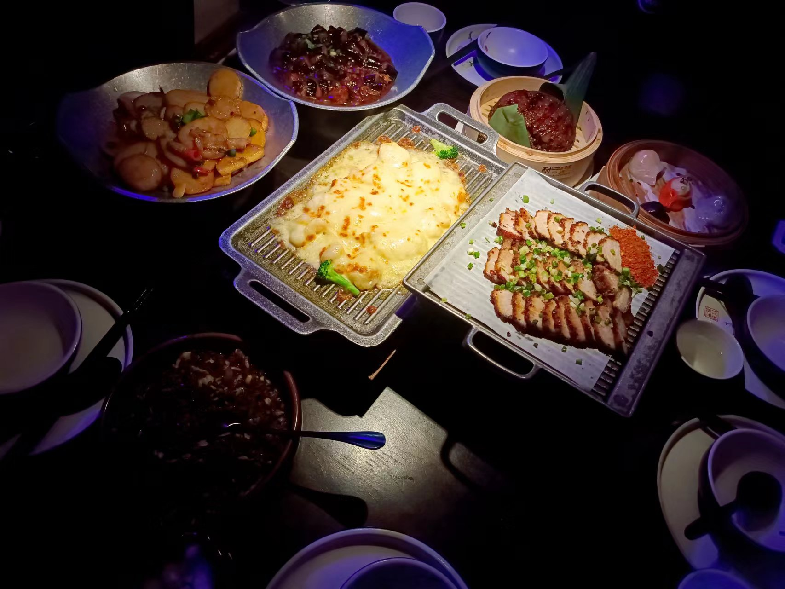

阅读
通过阅读，我可以使用最低的成本来了解这个多面的世界，在阅读中我可以感受到思维碰撞，打开思维的
角度。同时，阅读也可以使我在浮躁的环境中平静下来。保持阅读是一种习惯，在阅读中不仅我们的知识面得到拓展，我们的心性
慢慢地在发生改变。
《房思琪的初恋乐园》是我最喜欢的一本书籍之一，作家冯唐曾说令人惊艳的文字，令人悲伤的故事，令人愤怒的现实。
这本小说，不仅是汉语文学中稀有的由女性作家书写的性暴力故事，而且是稀有的直面人性之迷乱的故事，划开肌肤，
展现血肉，痛彻心肺。这本书被称作“向死而生的文学绝唱”。主人公勇敢将自己经历写下，让更多人看到多面的人性。
运动

散打
第一次在散打比赛中打败对手
但是友谊第一，比赛第二！
跑步
去跑步，感受自己的呼吸频率，是一件很舒服的事情!不仅能缓解自身压力， 也对自己的身体健康有很大的益处！
美食
还有什么是美食不能治愈的嘛，如果一顿不能那就来两顿！ 或是走进一个网红餐厅,品尝当下网红菜系。或是走进一座江浙古城，细品江浙风味……
看电影
《肖申克的救赎》是我最喜欢的电影之一，其中有一句我最喜欢的话“有的鸟终究是关不住的，因为他们的羽翼太过丰满”。
一场谋杀案使银行家安迪（蒂姆•罗宾斯 Tim Robbins 饰）蒙冤入狱，谋杀妻子及其情人的指控将囚禁他终生。
在肖申克监狱的首次现身就让监狱“大哥”瑞德（摩根•弗里曼 Morgan Freeman 饰）对他另眼相看。
瑞德帮助他搞到一把石锤和一幅女明星海报，两人渐成患难之交。很快，安迪在监狱里大显其才，
担当监狱图书管理员，并利用自己的金融知识帮助监狱官避税，引起了典狱长的注意，被招致麾下帮助典狱长洗黑钱。
偶然一次，他得知一名新入狱的小偷能够作证帮他洗脱谋杀罪。燃起一丝希望的安迪找到了典狱长，
希望他能帮自己翻案。阴险伪善的狱长假装答应安迪，背后却派人杀死小偷，让他唯一能合法出狱的希望泯灭。
沮丧的安迪并没有绝望，在一个电闪雷鸣的风雨夜，一场暗藏几十年的越狱计划让他自我救赎，重获自由！
老朋友瑞德在他的鼓舞和帮助下，也勇敢地奔向自由。